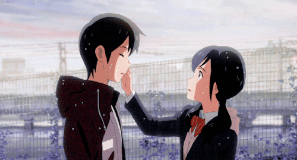
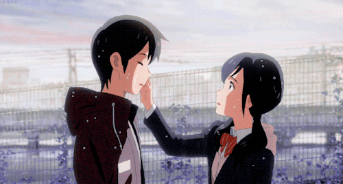

In the morning, the police track Hodaka to the hotel room.
Nagi is sent to the children's counseling center and Hodaka is taken to the police station.
Hina vanished into the sky since she is the sacrifice so the rain could stop.
What do you want Hodaka to do?
(Click the ending that you want below)
Don't save Hina
and have a normal weather
Save Hina but have
an abnormal weather